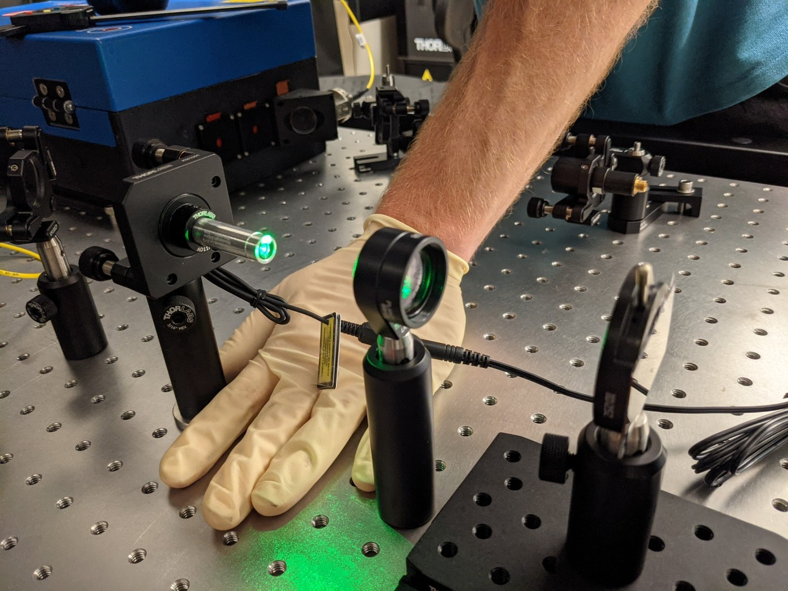
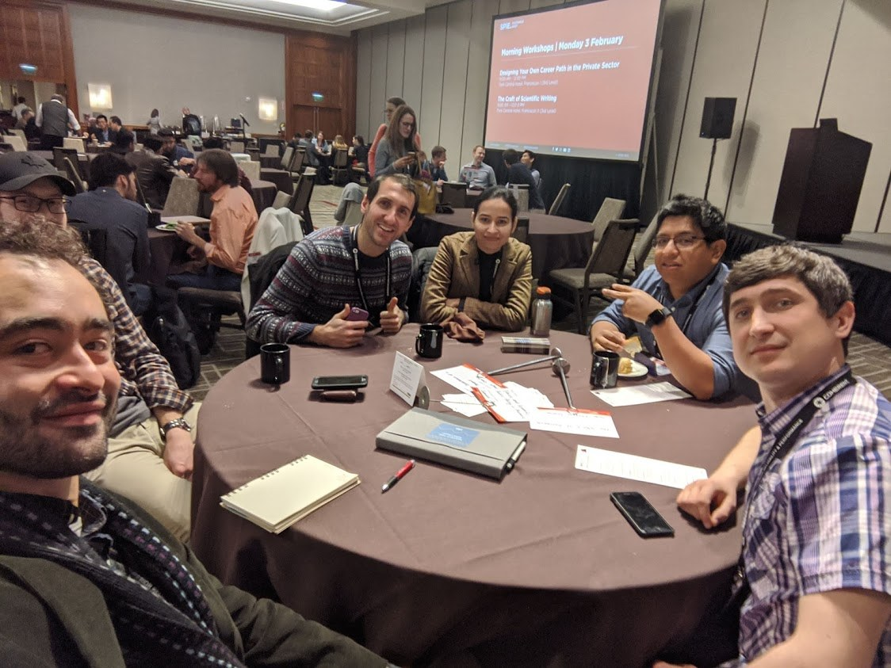
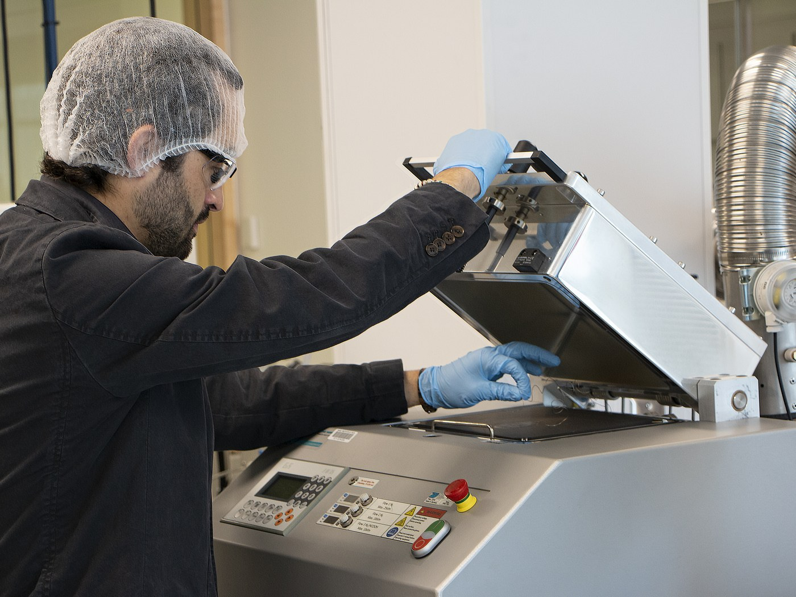
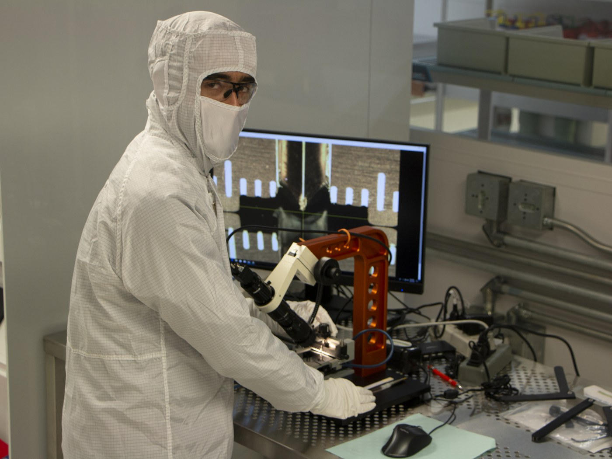
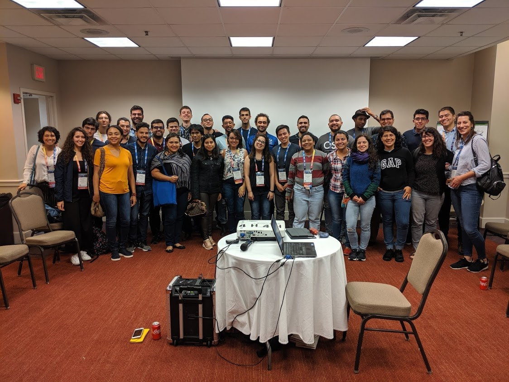

Lab life
Gallery
Snapshots from group meetings, conferences, lab dinners, and other CHIRP moments.







Lab life
Snapshots from group meetings, conferences, lab dinners, and other CHIRP moments.




